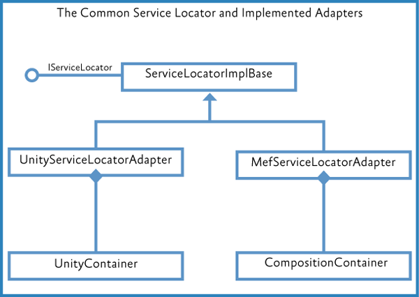

Managing Dependencies Between Components Using the Prism Library for WPF
Applications based on the Prism Library are composite applications that potentially consist of many loosely coupled types and services. They need to interact to contribute content and receive notifications based on user actions. Because they are loosely coupled, they need a way to interact and communicate with one another to deliver the required business functionality. To tie together these various pieces, applications based on the Prism Library rely on a dependency injection container.
Dependency injection containers reduce the dependency coupling between objects by providing a facility to instantiate instances of classes and manage their lifetime based on the configuration of the container. During the objects creation, the container injects any dependencies that the object requires into it. If those dependencies have not yet been created, the container creates and resolves their dependencies first. In some cases, the container itself is resolved as a dependency. For example, when using the Unity Application Block (Unity) as the container, modules have the container injected, so they can register their views and services with that container.
There are several advantages of using a container:
- A container removes the need for a component to locate its dependencies or manage their lifetimes.
- A container allows swapping of implemented dependencies without affecting the component.
- A container facilitates testability by allowing dependencies to be mocked.
- A container increases maintainability by allowing new components to be easily added to the system.
In the context of an application based on the Prism Library, there are specific advantages to a container:
- A container injects module dependencies into the module when it is loaded.
- A container is used for registering and resolving view models and views.
- A container can create the view models and injects the view.
- A container injects the composition services, such as the region manager and the event aggregator.
- A container is used for registering module-specific services, which are services that have module-specific functionality.
Note: Some samples in the Prism guidance rely on the Unity Application Block (Unity) as the container. Other code samples, for example the Modularity QuickStarts, use Managed Extensibility Framework (MEF). The Prism Library itself is not container-specific, and you can use its services and patterns with other containers, such as Castle Windsor, StructureMap, and Spring.NET.
Key Decision: Choosing a Dependency Injection Container
The Prism Library provides two options for dependency injection containers: Unity or MEF. Prism is extensible, thereby allowing other containers to be used instead with a little bit of work. Both Unity and MEF provide the same basic functionality for dependency injection, even though they work very differently. Some of the capabilities provided by both containers include the following:
- They both register types with the container.
- They both register instances with the container.
- They both imperatively create instances of registered types.
- They both inject instances of registered types into constructors.
- They both inject instances of registered types into properties.
- They both have declarative attributes for marking types and dependencies that need to be managed.
- They both resolve dependencies in an object graph.
Unity provides several capabilities that MEF does not:
- It resolves concrete types without registration.
- It resolves open generics.
- It uses interception to capture calls to objects and add additional functionality to the target object.
MEF provides several capabilities that Unity does not:
- It discovers assemblies in a directory.
- It uses XAP file download and assembly discovery.
- It recomposes properties and collections as new types are discovered.
- It automatically exports derived types.
- It is deployed with the .NET Framework.
The containers have differences in capabilities and work differently, but the Prism Library will work with either container and provide similar functionality. When considering which container to use, keep in mind the preceding capabilities and determine which fits your scenario better.
Considerations for Using the Container
You should consider the following before using containers:
Consider whether it is appropriate to register and resolve components using the container:
- Consider whether the performance impact of registering with the container and resolving instances from it is acceptable in your scenario. For example, if you need to create 10,000 polygons to draw a surface within the local scope of a rendering method, the cost of resolving all of those polygon instances through the container might have a significant performance cost because of the container's use of reflection for creating each entity.
- If there are many or deep dependencies, the cost of creation can increase significantly.
- If the component does not have any dependencies or is not a dependency for other types, it may not make sense to put it in the container.
- If the component has a single set of dependencies that are integral to the type and will never change, it may not make sense to put it in the container.
Consider whether a component's lifetime should be registered as a singleton or instance:
- If the component is a global service that acts as a resource manager for a single resource, such as a logging service, you may want to register it as a singleton.
- If the component provides shared state to multiple consumers, you may want to register it as a singleton.
- If the object that is being injected needs to have a new instance of it injected each time a dependent object needs one, register it as a non-singleton. For example, each view probably needs a new instance of a view model.
Consider whether you want to configure the container through code or configuration:
- If you want to centrally manage all the different services, configure the container through configuration.
- If you want to conditionally register specific services, configure the container through code.
- If you have module-level services, consider configuring the container through code so that those services are registered only if the module is loaded.
Note: Some containers, such as MEF, cannot be configured via a configuration file and must be configured via code.
Core Scenarios
Containers are used for two primary purposes, namely registering and resolving.
Registering
Before you can inject dependencies into an object, the types of the dependencies need to be registered with the container. Registering a type typically involves passing the container an interface and a concrete type that implements that interface. There are primarily two means for registering types and objects: through code or through configuration. The specific means vary from container to container.
Typically, there are two ways of registering types and objects in the container through code:
- You can register a type or a mapping with the container. At the appropriate time, the container will build an instance of the type you specify.
- You can register an existing object instance in the container as a singleton. The container will return a reference to the existing object.
Registering Types with the Unity Container
During initialization, a type can register other types, such as views and services. Registration allows their dependencies to be provided through the container and allows them to be accessed from other types. To do this, the type will need to have the container injected into the module constructor. The following code shows how the OrderModule type in the Commanding QuickStart registers a type.
// OrderModule.cs
public class OrderModule : IModule
{
public void Initialize()
{
this.container.RegisterType<IOrdersRepository, OrdersRepository>(new ContainerControlledLifetimeManager());
...
}
...
}
Depending on which container you use, registration can also be performed outside the code through configuration. For an example of this, see in .
Note: The advantage of registering in code, compared to configuration, is that the registration happens only if the module loads.
Registering Types with MEF
MEF uses an attribute-based system for registering types with the container. As a result, adding type registration to the container is simple: it requires the addition of the [Export] attribute to a type as shown in the following code example.
[Export(typeof(ILoggerFacade))]
public class CallbackLogger: ILoggerFacade
{
}
Another option when using MEF is to create an instance of a class and register that particular instance with the container. The QuickStartBootstrapper in the Modularity with MEF QuickStart shows an example of this in the ConfigureContainer method, as shown here.
protected override void ConfigureContainer()
{
base.ConfigureContainer();
// Because we created the CallbackLogger and it needs to
// be used immediately, we compose it to satisfy any imports it has.
this.Container.ComposeExportedValue<CallbackLogger>(this.callbackLogger);
}
Note: When using MEF as your container, it is recommended that you use attributes to register types.
Resolving
After a type is registered, it can be resolved or injected as a dependency. When a type is being resolved, and the container needs to create a new instance, it injects the dependencies into these instances.
In general, when a type is resolved, one of three things happens:
If the type has not been registered, the container throws an exception.
Note: Some containers, including Unity, allow you to resolve a concrete type that has not been registered.
- If the type has been registered as a singleton, the container returns the singleton instance. If this is the first time the type was called for, the container creates it and holds on to it for future calls.
If the type has not been registered as a singleton, the container returns a new instance.
Note: By default, types registered with MEF are singletons and the container holds a reference to the object. In Unity, new instances of objects are returned by default, and the container does not maintain a reference to the object.
Resolving Instances with Unity
The following code example from the Commanding QuickStart shows where the OrdersEditorView and OrdersToolBar views are resolved from the container to associate them to the corresponding regions.
// OrderModule.cs
public class OrderModule : IModule
{
public void Initialize()
{
this.container.RegisterType<IOrdersRepository, OrdersRepository>(new ContainerControlledLifetimeManager());
// Show the Orders Editor view in the shell's main region.
this.regionManager.RegisterViewWithRegion("MainRegion",
() => this.container.Resolve<OrdersEditorView>());
// Show the Orders Toolbar view in the shell's toolbar region.
this.regionManager.RegisterViewWithRegion("GlobalCommandsRegion",
() => this.container.Resolve<OrdersToolBar>());
}
...
}
The OrdersEditorViewModel constructor contains the following dependencies (the orders repository and the orders command proxy), which are injected when it is resolved.
// OrdersEditorViewModel.cs
public OrdersEditorViewModel(IOrdersRepository ordersRepository, OrdersCommandProxy commandProxy)
{
this.ordersRepository = ordersRepository;
this.commandProxy = commandProxy;
// Create dummy order data.
this.PopulateOrders();
// Initialize a CollectionView for the underlying Orders collection.
this.Orders = new ListCollectionView( _orders );
// Track the current selection.
this.Orders.CurrentChanged += SelectedOrderChanged;
this.Orders.MoveCurrentTo(null);
}
In addition to the constructor injection shown in the preceding code, Unity also allows for property injection. Any properties that have a [Dependency] attribute applied are automatically resolved and injected when the object is resolved.
Resolving Instances with MEF
The following code example shows how the Bootstrapper in the Modularity with MEF QuickStart obtains an instance of the shell. Instead of requesting a concrete type, the code could request an instance of an interface.
protected override DependencyObject CreateShell()
{
return this.Container.GetExportedValue<Shell>();
}
In any class that is resolved by MEF, you can also use constructor injection, as shown in the following code example from ModuleA in the Modularity with MEF QuickStart, which has an ILoggerFacade and an IModuleTracker injected.
[ImportingConstructor]
public ModuleA(ILoggerFacade logger, IModuleTracker moduleTracker)
{
if (logger == null)
{
throw new ArgumentNullException("logger");
}
if (moduleTracker == null)
{
throw new ArgumentNullException("moduleTracker");
}
this.logger = logger;
this.moduleTracker = moduleTracker;
this.moduleTracker.RecordModuleConstructed(WellKnownModuleNames.ModuleA);
}
Another option is to use property injection, as shown in the ModuleTracker class from the Modularity with MEF QuickStart, which has an instance of the ILoggerFacade injected.
[Export(typeof(IModuleTracker))]
public class ModuleTracker : IModuleTracker
{
[Import] private ILoggerFacade Logger;
}
Using Dependency Injection Containers and Services in Prism
Dependency injection containers, often referred to as just "containers," are used to satisfy dependencies between components; satisfying these dependencies typically involves registration and resolution. The Prism Library provides support for the Unity container and for MEF, but it is not container-specific. Because the library accesses the container through the IServiceLocator interface, the container can be replaced. To do this, your container must implement the IServiceLocator interface. Usually, if you are replacing the container, you will also need to provide your own container-specific bootstrapper. The IServiceLocator interface is defined in the Common Service Locator Library. This is an open source effort to provide an abstraction over IoC (Inversion of Control) containers, such as dependency injection containers, and service locators. The objective of using this library is to leverage IoC and Service Location without tying to a specific implementation.
The Prism Library provides the UnityServiceLocatorAdapter and the MefServiceLocatorAdapter. Both adapters implement the ISeviceLocator interface by extending the ServiceLocatorImplBase type. The following illustration shows the class hierarchy.

Although the Prism Library does not reference or rely on a specific container, it is typical for an application to rely on a specific container. This means that it is reasonable for a specific application to refer to the container, but the Prism Library does not refer to the container directly. For example, the Stock Trader RI and several of the QuickStarts included with Prism rely on Unity as the container. Other samples and QuickStarts rely on MEF.
IServiceLocator
The following code shows the IServiceLocator interface.
public interface IServiceLocator : IServiceProvider
{
object GetInstance(Type serviceType);
object GetInstance(Type serviceType, string key);
IEnumerable<object> GetAllInstances(Type serviceType);
TService GetInstance<TService>();
TService GetInstance<TService>(string key);
IEnumerable<TService> GetAllInstances<TService>();
}
The Service Locator is extended in the Prism Library with the extension methods shown in the following code. You can see that IServiceLocator is used only for resolving, meaning it is used to obtain an instance; it is not used for registration.
// ServiceLocatorExtensions
public static class ServiceLocatorExtensions
{
public static object TryResolve(this IServiceLocator locator, Type type)
{
try
{
return locator.GetInstance(type);
}
catch (ActivationException)
{
return null;
}
}
public static T TryResolve<T>(this IServiceLocator locator) where T: class
{
return locator.TryResolve(typeof(T)) as T;
}
}
The TryResolve extension method—which the Unity container does not support—returns an instance of the type to be resolved if it has been registered; otherwise, it returns null.
The ModuleInitializer uses IServiceLocator for resolving the module during module loading, as shown in the following code examples.
// ModuleInitializer.cs - Initialize()
IModule moduleInstance = null;
try
{
moduleInstance = this.CreateModule(moduleInfo);
moduleInstance.Initialize();
}
...
// ModuleInitializer.cs - CreateModule()
protected virtual IModule CreateModule(string typeName)
{
Type moduleType = Type.GetType(typeName);
if (moduleType == null)
{
throw new ModuleInitializeException(string.Format(CultureInfo.CurrentCulture, Properties.Resources.FailedToGetType, typeName));
}
return (IModule)this.serviceLocator.GetInstance(moduleType);
}
Considerations for Using IServiceLocator
IServiceLocator is not meant to be the general-purpose container. Containers have different semantics of usage, which often drives the decision for why that container is chosen. Bearing this in mind, the Stock Trader RI uses the dependency injection container directly instead of using the IServiceLocator. This is the recommend approach for your application development.
In the following situations, it may be appropriate for you to use the IServiceLocator:
- You are an independent software vendor (ISV) designing a third-party service that needs to support multiple containers.
- You are designing a service to be used in an organization where they use multiple containers.
More Information
For information related to containers, see the following:
- Unity Application Block on MSDN.
- Unity community site on CodePlex.
- Managed Extensibility Framework Overview on MSDN.
- MEF community site on CodePlex.
- Inversion of Control containers and the Dependency Injection pattern on Martin Fowler's website.
- Design Patterns: Dependency Injection in MSDN Magazine.
- Loosen Up: Tame Your Software Dependencies for More Flexible Apps in MSDN Magazine.
- Castle Project
- StructureMap
- Spring.NET